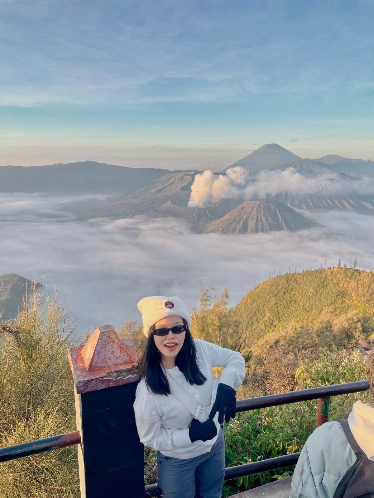
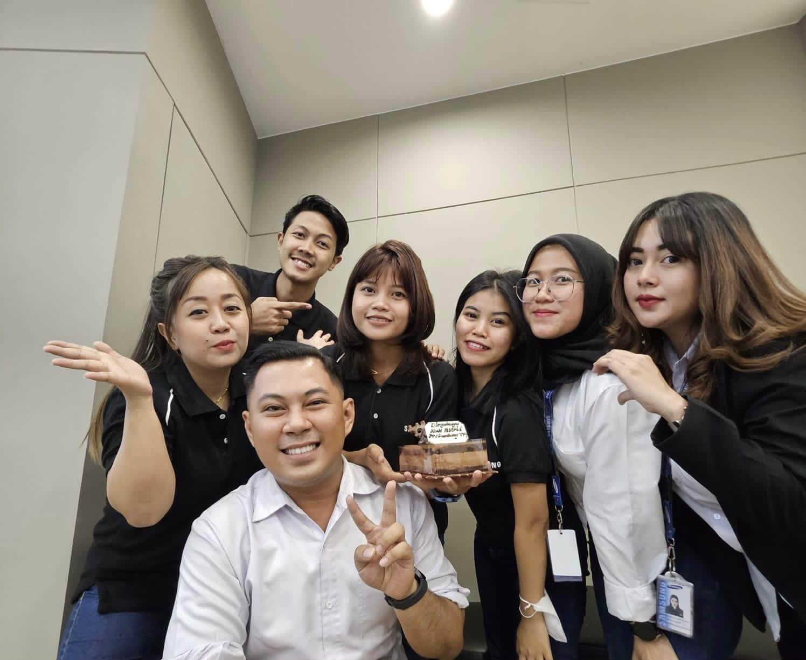

Cici
Information management student and software engineering
Combining expertise in Information management and programming to build modern web application
about
Hello, I'm Cici from Indonesia.
I'm an international student majoring in information management at Chung Yuan Christian University,Taiwan.
I'm very interested in the world of programming, and I enjoy trying new things and taking on new challenges.
I'm a responsible person who respects others. I love travelling, especially to the sea. For me, the sound of water brings a sense of calm and peace.
" far from home,close to my dreams."
skill
experience
Administrative Intern
completed a 3-month internship program, assisting staff with daily office duties, document management, and light tasks using Microsoft Office
- Data Recording & Entery:Entered daily operational data, sales report and inventory records into the company's internal system (such as Microsoft or a database management system)accurately and a structured way
- Document Management & Archiving:Management physical and digital document,sorted correspondence, and made sure important document (such as cooperation contracts,invoices,and delivery notes)were neatly archived and easy to when needed
- Periodic Report PreparationAssisted senior in compiling data and preparing clear, well-organized weekly and monthly team progress report

Competitive badminton club member
Dedicate years of passion and consistent training to competitive badminton, actively participating in junior high, high school, and university club programs while representing teams in prestigious inter-club and national-level championships. This journey has profoundly shaped my discipline, resilience, and strategic thinking under high-pressure environments
- Junior & Senior High School Club Training: Built a strong foundational skill set through rigorous training regimens during my junior and senior high school years, balancing intensive athletic schedules with demanding academic coursework.
- Inter-Club & National Championships: Competed in high-stakes regional inter-club tournaments and national-level championships, facing top-tier opponents, handling intense competitive pressure, and constantly pushing my physical and mental limits.
- Teamwork, Focus & Resilience: Collaborated closely with coaches and doubles partners to analyze opponents' strategies, cultivate split-second decision-making abilities, and develop deep mental endurance that translates directly into both sports and academic projects.
contact
Feel free to reach out to me through the following:
- email: axingyu2@gmail.com
- instagram: @zxingcia